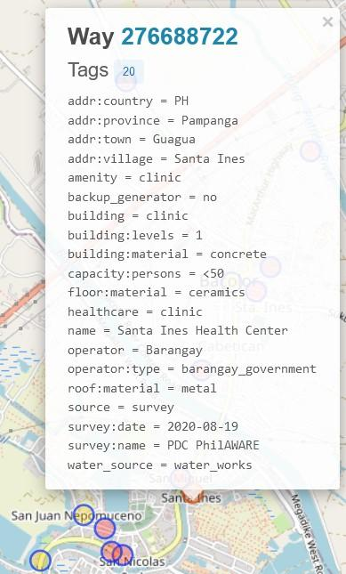
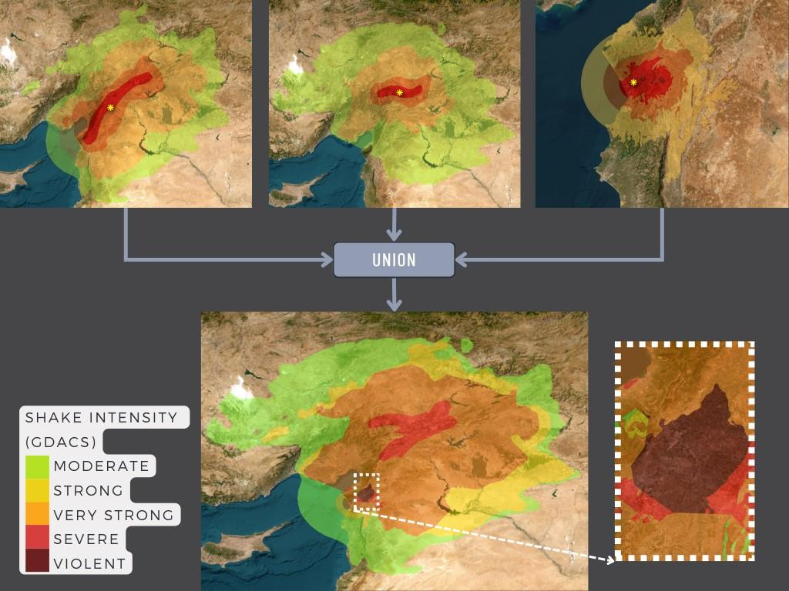
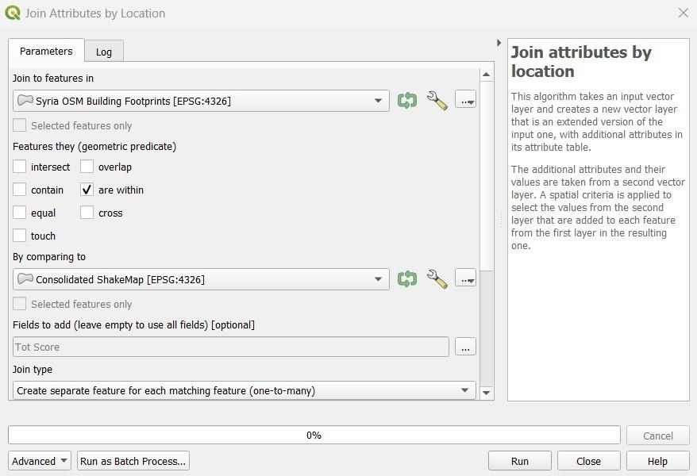
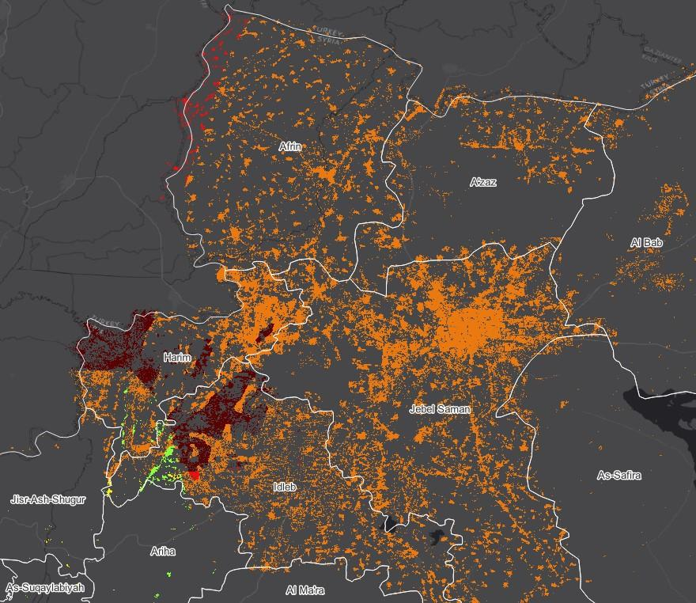
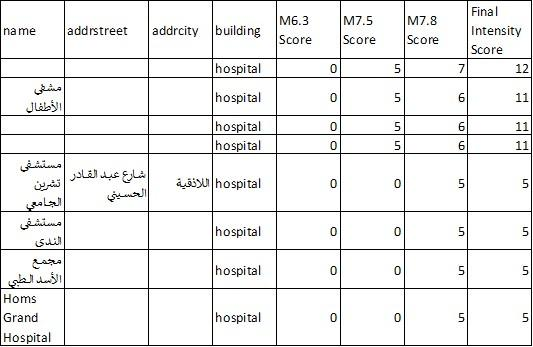
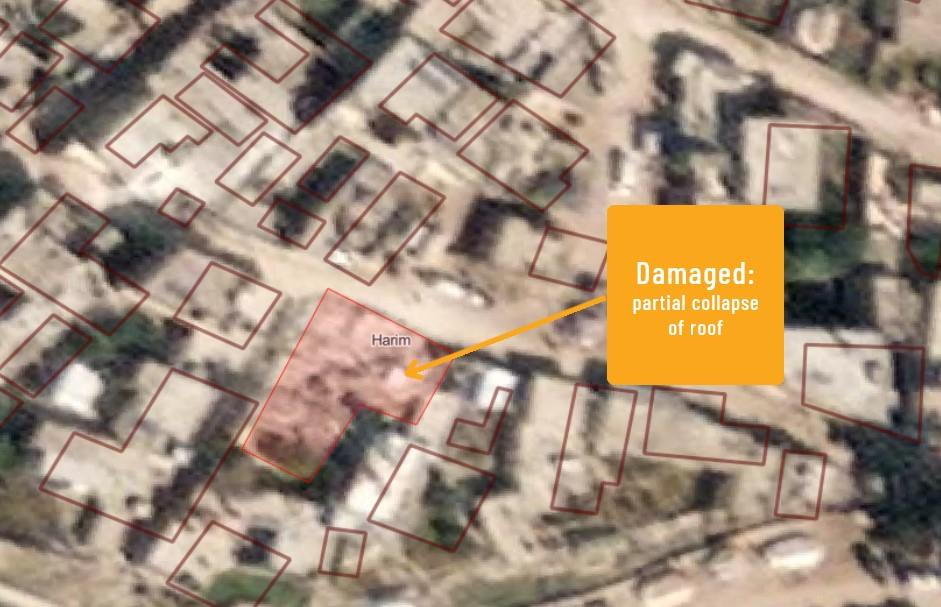
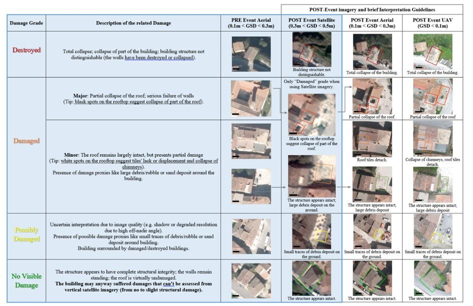

8.2. Post-Earthquake Building Damage Assessment using OpenStreetMap (OSM)
Course Objectives
This section provides:
- An overview on the relevance on the use of OSM data for damage assessments post eathquake
- Deep dive into data models and acquisition of datasets
- Step-by-step instructions for creating damage assessments using OSM data on GIS
Learning Activities
Overview
Performing a building damage assessment is crucial after a natural disaster to prevent further casualties and identify safe locations for temporary shelters. The assessment can aid in response and recovery efforts by prioritizing areas with the most damage, and provide data to evaluate property damage and estimate repair costs. This document provides a step-by-step guide for using OpenStreetMap data in post-earthquake building damage assessments, which can be customized based on available datasets and the level of assessment needed.
OpenStreetMap Building Data
The first thing to consider before conducting such an assessment is the availability of publicly accessible and downloadable datasets. This document’s Data Inputs section contains a good number of data repositories that are useful for a post-earthquake building damage assessment. One of them is the OpenStreetMap database, which is a free and open-source mapping platform that provides building footprints with valuable information such as height, material, and capacity. It is driven by OSM contributors all over the world, who are mostly volunteers mapping geospatial features and adding critical information based on local knowledge.
Figure 1 shows a health clinic in the Philippines that was mapped in OSM by the PhilAWARE Project. The PhilAWARE Project, like many other OSM-based mapping projects, created its own data model 1, which is a collection of OSM tags that best describe the attributes of a feature that are significant to the project. Because the PhilAWARE Project was designed to provide situational data to local DRRM offices, tags like backup_generator=no, building_material=concrete, and capacity_persons=<50 are critical in determining the possibility of this clinic remaining operational during a disaster event.
 Fig 1 .Health clinic mapped in OSM through the PhilAWARE Project
In 2017, the Humanitarian OpenStreetMap Team (HOT), in collaboration with the Global Earthquake Model (GEM) and ImageCat, created a data schema for a global exposure database (GED4ALL) with the goal of assisting local and global actors in identifying risk and equipping them for data-driven decision-making. The table below shows a simplified data model 2 of the commonly used tags for building attributes selected by GEM as crucial in describing the structural integrity of infrastructures during a hazard event.
Table 1. GED4ALL Simplified Data Model on Buildings
| Building Attribute | OSM Key | OSM Description |
|---|---|---|
| Occupancy | building=* | Describe the building purpose (residential, commercial, public, mixed_use, industrial, agriculture, assembly, government, educational, unknown) |
| Surroundings | building:adjacency=* | Describe the neighboring condition of the building( attached, free_standing) |
| Date of Construction or Retrofit | building:age=* | Proposed OSM age tag, associated with buildings (pre_2000, post_2000, unknown) |
| Condition | building:condition=* | Describe the condition of the building (good, average, poor, unknown) |
| Geological Base | building:geological_site=* | Describes the geological site the building is built upon (flat_land, river_bank, slopy_land, landslide_prone_area, flood_prone_area, river_bank) |
| Material of the Lateral Load-Resisting System | building:lateral:material=* | Proposed lateral load resisting material tag (concrete_reinforced, concrete, concrete_steel, metal, masonary_reinforced, masonry, masonry_confined, earth, earth_reinforced, wood, other, unknown ) |
| Lateral Load Resisting System | building:lateral:system=* | Identify structural system of buildings (moment_frame, infilled_frame, braced_frame, post_beam, wall, dual_framewall, flat_slab, waffle_slab ,infill_flatslab, infill_waffleslab, hybrid, unknown) |
| Height | building:levels=* | Number of above-ground levels of a building |
| Capacity | capacity:persons=* | Describe the number of people a building can support |
| Roof | roof:material=* | Outer material for the building roof (masonry, earth, concrete, metal, wood, fabric, slate, stone, clay, unknown) |
| roof:shape=* | Well known roof shapes (flat, pitched, monopitch, sawtooth, curved, complex_regular, complex_irregular, unknown) |
Although not all OSM buildings would have the same number of attributes as described in the data model above, providing users with rich building-level data allows them to generate secondary analyses that can support or validate the results of the building damage assessment.
Data Inputs
- Determine your area/s of interest: Prior to collecting data, you must first identify an area of interest to which the assessment will be bound. It can be at the national or district level, as long as it is within the disaster’s priority area or impact zone.
- List and download all necessary data sources: Start organizing and collecting data on the post-earthquake disaster event, exposure data, existing building damage assessments, etc.
Table 2. List of Opensource Datasets and Repositories
| Data | Description | Link to Source |
|---|---|---|
| USGS ShakeMap | ground motion and shaking intensity information | https://earthquake.usgs.gov/data/shakemap/ |
| Global Earthquake Model | earthquake risk assessment to locate probable impact of seismic hazards | https://data.humdata.org/organization/gem-foundation |
| Copernicus Emergency Mapping Service | results of analyses (like building damage assessment) on requested activations from Copernicus | copernicus Dashboard |
| Copernicus Emergency Mapping Service Request | guide on how to request for Copernicus mapping service | Copernicus How To Use |
| UNOSAT Analyses | results of analyses (like building damage assessment) on requested activations from UNOSAT | https://unosat.org/products |
| UNOSAT Humanitarian Rapid Mapping Service Request | guide on how to request for UNOSAT mapping service | https://unosat.org/services |
| MAXAR Open Data Program | satellite imageries showing post-earthquake situation and damage | https://www.maxar.com/open-data |
| Humanitarian Data Exchange (HDX) | hosts disaster layers and exposure data like OSM data exported by HOT | https://data.humdata.org/ |
| Global Disaster Alert and Coordination System (GDACS) | list of disaster event datasets (also contains USGS ShakeMap) | https://www.gdacs.org/ |
| OpenAerialMap | stores post-earthquake satellite and drone imageries from organizations and individuals | https://openaerialmap.org/ |
| Tips |
|---|
| Many of the data sources that can be used to generate a building damage assessment are spread out across various databases and repositories. Just make sure you have all of the necessary up-to-date datasets before beginning the assessment. Remember that the data you use will have a large impact on the quality and accuracy of the assessment results. |
- Properly cite data sources: Make sure to check the license type of each dataset and learn how to properly attribute them to your work.
Example Use Case
Scenario
Following the 7.8, 7.5, and 6.3 magnitude earthquakes affecting Syria in February 2023, a group of trained responders is planning to assist people in evacuating their homes. For an effective response plan, they want to first identify the city hotspots where buildings are most likely to be destroyed. They then intend to categorize the different types of building damage within the hotspots for better prioritization. There are no public building damage assessments available, but MAXAR has released post-earthquake satellite imagery for the area.
- Download all available datasets: Make sure the file formats are compatible with the mapping software you intend to use. Note that the QGIS application will be used throughout the various processes in this demonstration.
| Data | Description | Link to Source |
|---|---|---|
| USGS ShakeMap | Intensity polygons from USGS through the GDACS Event Resources | M 7.8 in Türkiye on 06 Feb 2023 01:17 UTC - M 7.5 in Türkiye on 06 Feb 2023 10:24 UTC - M 6.3 in Türkiye on 20 Feb 2023 17:04 UTC |
| Pre-event OSM Building Footprints | OSM building data uploaded to the HDX repository | https://data.humdata.org/dataset/hotosm_syr_buildings (can also be downloaded from the (6.1) HOT Export Tool, Geofabrik, (7.3) Overpass API, etc.) |
| OCHA Administrative Boundaries | Admin bounds uploaded to the HDX repository | https://data.humdata.org/dataset/cod-ab-syr |
| MAXAR Open Data Program | Post-earthquake satellite imageries | Satellite Imageries (includes Planet and Maxar imageries) |
- Consolidate USGS ShakeMaps: Especially for disasters with multiple major events, such as the Turkey-Syria Earthquake, which has three main triggers (M 7.8, M 7.5, and M 6.3 events), it is critical to understand where the events overlap to see where the risk is greatest. With that, you need to perform a union of the disaster layers while making sure that the attribute fields corresponding to the intensity levels are all imported to the output layer.
 Fig 2. Consolidation of USGS ShakeMaps using QGIS
- Clip consolidated disaster layer: Clip the consolidated USGS ShakeMap within Syria using the OCHA Administrative Boundary dataset.
- Join attributes of the disaster layer to the OSM Building Footprints: Overlay the OSM Building Footprints to the disaster layer and search for Join Attributes by Location in the QGIS Processing Toolbox. You may use within as the geometric predicate to capture footprints that are within the disaster layer extent. Add the Total Intensity Score field to the resulting layer and use it to classify the building footprints.
 Fig 3. Parameter settings for the Join Attributes by Location process in QGIS
A total of 967,813 buildings were identified to be within the USGS Consolidated ShakeMap. This represents 90% of all buildings mapped in OSM for Syria.
- Overlay administrative layer for visual inspection: Identify cities where buildings experienced severe to violent shaking intensities, as these are the most likely to have suffered damage as a result of the earthquake hazards.
 Fig 4. Classified OSM Building Footprints over Syria Administrative Bounds
Visual inspection reveals that the most vulnerable buildings are in Harim/Harem and the northwest portion of Idlib/Idleb. Buildings in the northwest part of Afrin are also likely to be damaged. Depending on the available OSM tags, opening the attribute table of the classified building footprints will display critical exposure information such as the name, type, and address of the building.
 Fig 5. Part of the classified building’s attribute table
- Use MAXAR’s post-earthquake imageries to validate and identify damage types: Use MAXAR’s post-earthquake imagery as a validation layer on the predicted areas of building damage. The example below shows how Copernicus damage grades were used to determine the level of damage per building in Harim/Harem, Syria.
 Fig 6. Damaged building was identified using MAXAR’s post-earthquake imagery
 Fig 7. Building Damage Grade from Copernicus 5
Remote validation using post-earthquake imagery is beneficial, particularly in identifying heavily damaged buildings. Minor infrastructure damage, on the other hand, is difficult to identify from images. This is why field validation is still recommended to better categorize the different types of building damage.
Conclusion
OpenStreetMap (OSM) data is helpful in performing rapid analyses such as assessing post-earthquake building damage. Crowdsourcing is commonly used to collect OSM data, which allows for a large volume of data to be collected quickly and efficiently. This information can then be used to determine the extent of building damage in the affected area.
One way that OSM data can be used for post-earthquake damage assessment is by serving as exposure data. This means that the OSM building footprints can be used to estimate the number of buildings with probable damage based on the intensity datasets of the earthquake event. By overlaying the intensity dataset onto the OSM building footprints, it is possible to identify which buildings are likely to have been damaged.
In addition, OSM data can be linked to existing damage analysis, allowing the building footprints to assist in identifying and validating different damage grades within an area. This means that OSM data can be used to complement other types of data and provide a more comprehensive understanding of the extent of damage caused by the earthquake.
It is important to note that the quality and quantity of OSM data available for post-earthquake damage assessment will depend on the level of mapping that has been conducted in the affected areas prior to the disaster. Areas that are well-mapped will have an advantage in terms of the quantity and quality of assessment that can be conducted. This is why it is critical to prioritize the mapping of disaster risk hotspots in OSM even before a disaster event occurs. By doing so, it is possible to collect more accurate and useful data that can be used to assess the damage and assist in relief efforts in the aftermath of an earthquake.
Additional resources
- PhilAWARE Data Model, Retrieved from https://wiki.openstreetmap.org/wiki/PhilAWARE_Data_Model ↩︎
- GED4ALL Data Model, Retrieved from https://wiki.openstreetmap.org/wiki/GED4ALL ↩︎
- HOT Export Tool, Retrieved from https://toolbox.hotosm.org/pages/data-export/6.1-hot-export-tool/ ↩︎
- Overpass Turbo, Retrieved from https://toolbox.hotosm.org/pages/data-use-and-analysis/7.3_web_and_interactive_maps/ ↩︎
- Copernicus Damage Assessment, Retrieved from https://emergency.copernicus.eu/mapping/book/export/html/138313 ↩︎